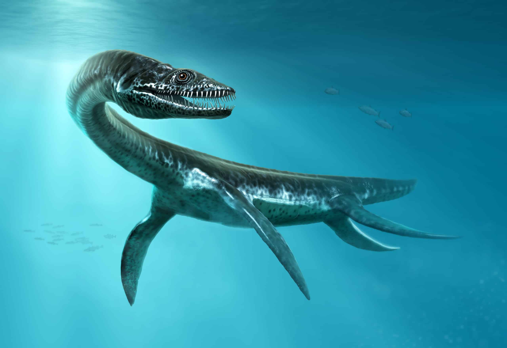

El Jurasico está dividido en:
El Jurásico temprano:
Empezó hace 200 millones de años y acabó hace 175 millones de años.
Su clima era tropical.
Encuanto a los océanos: las especies más comunes eran:
 los plesiosaurios
Eran unos reptiles oceánicos que llegaron a medir ubos 14 metros y que transformaron sus extremidades en altas.